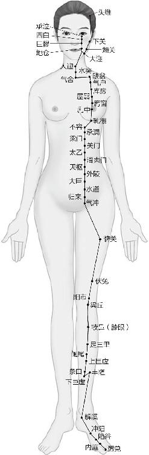
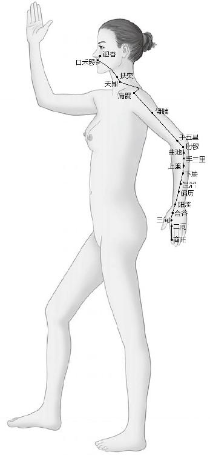
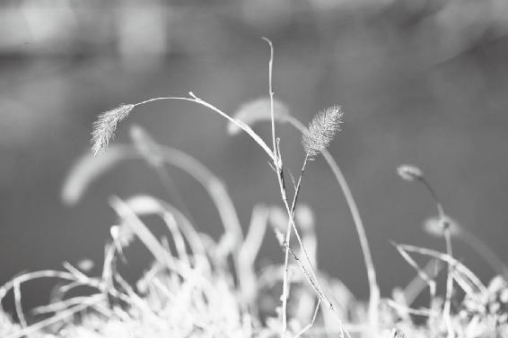
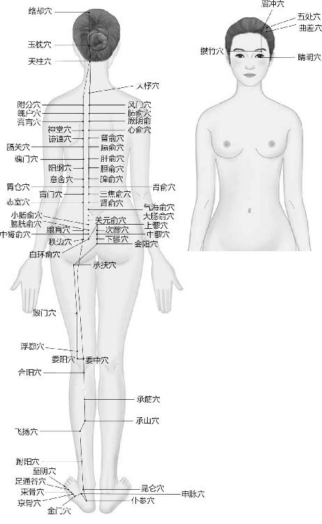
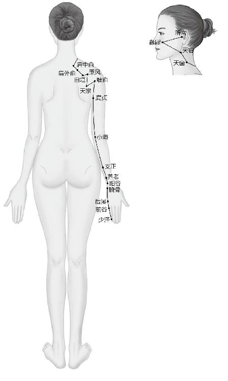
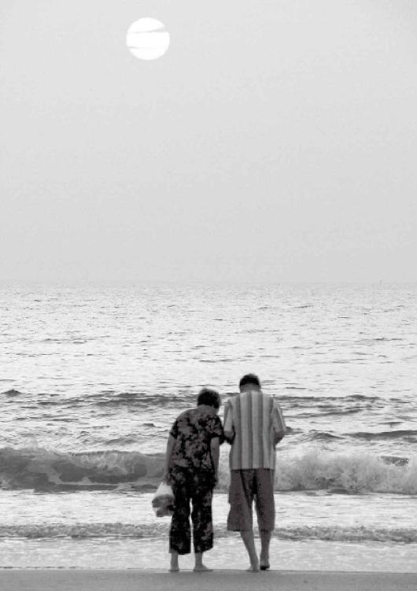

女性二十八岁之前，她的精还是盛满的，吃进去的五谷杂粮、肉食等，都能转化成精，填补到骨髓里面去，这时候精的积累大于消耗。过了二十八岁这个高峰以后，精的消耗就慢慢大于积累了。
打肉毒素，它把支配面部表情的那个神经给杀死了，结果皱纹倒是没了，可那张脸也变成了面具脸，毫无表情。
要脸色好，还得调内在。你的胃肠功能调理得好，脸色自然就会好看。并且这种好看不仅仅是那种性感的好看，而且是一种健康的生理功能良好的气色美。
阴寒的东西化不了，最后就会集结成一种负面的能量，集聚到内心，人就常常觉得活着没意思，想死。
经文：
四七筋骨坚，发长极，身体盛壮；五七阳明脉衰，面始焦，发始堕；六七三阳脉衰于上，面皆焦，发始白；七七任脉虚，太冲脉衰少，天癸竭，地道不通，故形坏而无子也。
“四七筋骨坚，发长极，身体盛壮”
梁冬：关于女性生理周期的问题，我们从“一七”讲到了“三七”，现在我们要讲“四七”。“四七筋骨坚，发长极，身体盛壮”，请问徐老师什么叫做“筋骨坚”？
徐文兵：21岁以后，女孩子就不再长高了，但是她的肾精和肾气仍然在往高处走，能量不再用于增加高度，而是用于充实她内在的组织和器官，表现出来就是“筋骨壮”。“筋”是我们讲的“肌腱”，就是连接肌肉和骨头的筋。
21岁以后，女孩子就不再长高了，但是她的肾精和肾气仍然在往高处走，能量不再用于增加高度，而是用于充实她内在的组织和器官。
正常的肌腱有力量有弹性，能够反复伸缩。有的人一扭脖子就“咯楞咯楞”响，身上老有那种条索状、僵化、纤维化的东西，就说明肌腱已经老化了。肾主骨生髓，“筋骨盛”的时候，人的骨骼就发育得非常好，钙质不会流失，骨头坚硬而有韧性。
梁冬：不是在厕所里滑倒一下，骨头就断了。
徐文兵：下面我们说“发长极”。古代的人一般都束发、蓄发，不剃头。他们讲“身体发肤，受之父母，不可轻弃”，就是说不要轻易毁伤自己的身体，包括头发。
梁冬：据说一个人的头发如果留得太长的话，会耗脑油，是不是这样？
一个人的头发如果留得太长的话，会耗脑油。
徐文兵：对。我们说要有一个健全的身体，所谓“全”，就是说自然赋予你的所有的东西都是有用的，可现代人认识不到这些，常常干一些蠢事。比如有的人一生下来就把阑尾给切了，把扁桃体给割了，一说胆发炎了结石了就切掉胆囊，这就叫“不全”，用一个字来形容就是“残”。
自然赋予你的所有的东西都是有用的，可现代人认识不到这些，常常干一些蠢事。
梁冬：身残志不坚。
徐文兵：头发是血之余，那血是从哪儿生出来的呢？它是由精血化成的。一个人精血足的时候，头发就特别浓密，而且会长得特别长；精血一旦不足，即使头发仍然在生长，也很容易分叉，而且会枯黄焦萎，脱落变白。
一个人精血足的时候，头发就特别浓密，而且会长得特别长；精血一旦不足，即使头发仍然在生长，也很容易分叉，而且会枯黄焦萎，脱落变白。
所以古代人相亲娶媳妇，一看女方梳着一条油光水滑的大辫子，就觉得她行。如果一个女人到28岁还是一头稀稀拉拉的黄发，就说明她精血不足。
物极必反，28岁虽然是女人的生理高峰，但从此以后就开始走下坡路了。所以我们建议女孩子在28岁之前生育孩子，这样不仅孩子健康，你拉扯孩子也不累。因为哺乳孩子是一个很需要精力的活儿，半夜孩子一哭你就得起来，一尿就得换尿布。21岁到28岁之间做这些事情，你不会觉得累，即使晚上起几回，第二天仍然可以精力充沛，但一旦过了那个时期，自个儿带孩子就相当累了。
如果一个女人到28岁还是一头稀稀拉拉的黄发，就说明她精血不足。
所以女人们要意识到自己有一个生理的起点，一个拐点，还有一个高峰。28岁以后身体就开始走下坡路了。
物极必反，28岁虽然是女人的生理高峰，但从此以后就开始走下坡路了。
梁冬：从中医的角度来讲，是这个道理，但是现实生活中，很多这个年龄段的女性还在读博士，读博士后，也很无奈。
徐文兵：女性在28岁之前，吃进去的五谷杂粮、肉食等，都能转化成精，填补到骨髓里面去，这时候精的积累大于消耗。过了28岁以后，精的消耗就慢慢大于积累了。因此，28岁也是女性展现少妇成熟风韵的最美年龄。
“五七阳明脉衰，面始焦”
梁冬：到了“五七”，“阳明脉衰，面始焦，发始堕”，阳明脉开始衰了，然后“面始焦”。
徐文兵：五七是35岁，我说了从28岁开始，女人的身体状况就走下坡路了，到了35岁就有个明显的外在表现—“面始焦”，即人的颜面开始变得黑了。“焦”是什么颜色？黄或者黑。
从28岁开始，女人的身体状况就走下坡路了，到了35岁就有个明显的外在表现—“面始焦”，即人的颜面开始变得黑了。
梁冬：还有就是脆，饭焦了有点儿脆的那种感觉。
徐文兵：你这个说法比较高明。刚才我只说了“焦”的颜色，你却把它的质地也说出来了。“面始焦”就是说脸上开始长皱纹，脸色变得焦黑，在这个过程中，女人从“美少女”变成“美妇人”，最后成了“黄脸婆”。
《黄帝内经》的可贵之处在于，它不是罗列病症和病态表现，而是告诉你原因。“面始焦”的原因是什么，就是前边一句话—“阳明脉衰”。
《黄帝内经》的可贵之处在于，它不是罗列病症和病态表现，而是告诉你原因。
梁冬：阳明脉指的是哪条脉？
徐文兵：我讲过，促进人生殖功能的主要是奇经八脉，但是阳明脉并不属于奇经八脉，而是属于十二正经，属于我们的“腑”。六腑属阳，五脏属阴，也就是说，对外开放的都属阳，看不见摸不着的都属阴。很多人会说肠子这些东西是看不见的，应该属阴。我们的确看不见它，但是如果拿一根棍往里面捅，就能捅得着，捅得着的都是“腑”，都是阳性的。所以阳明单指我们的六腑。
促进人生殖功能的主要是奇经八脉。
梁冬：哪六腑啊？
徐文兵：“六腑”是指胃、小肠、大肠、三焦、胆和膀胱。阳明脉有两条，一条是足阳明胃经，另一条是手阳明大肠经，这两条经络涉及到“六腑”中的两个腑：胃和大肠。这两个腑本来属阳，应该挺热乎。如果它们的功能衰弱了，就会不动、不热乎了，外在的表现就是“面始焦”，脸色变得晦暗了，没有那么滋润和有弹性了。
足阳明脉起于我们的瞳孔正下边，往下走至口角再从腮帮子这儿沿着面颊往上走，直到额头，这条筋络就是我们的“足阳明胃经”。
你看它基本上覆盖了我们整张脸，所以如果胃的功能衰弱了，那么脸色和脸的形态就会马上出现变化。手阳明大肠经则是从我们的上嘴唇这儿交叉而过，止于鼻子的两侧。
如果胃的功能衰弱了，那么脸色和脸的形态就会马上出现变化。
所以说“阳明脉衰”就是指胃和大肠的功能出现了衰退。但如果过了35岁后，我们依然能将胃和大肠的功能调得非常好，那么脸色当然就不会焦。
梁冬：所以说擦再多护肤品都没用，要脸色好，还是得吃饭。
徐文兵：还得调内在。你的胃肠功能调理得好，脸色自然就会好看。并且这种好看不仅仅是那种性感的好看，而且是一种健康的生理功能良好的气色美。
要脸色好，还得调内在。你的胃肠功能调理得好，脸色自然就会好看。并且这种好看不仅仅是那种性感的好看，而且是一种健康的生理功能良好的气色美。
还有的人脸上长斑，比如生育以后脸上长蝴蝶斑，有的人早上起来有黑眼圈，有的人起床时下眼睑是肿的，另有一些人长着一张刀疤脸等等，说到底都是肠胃功能不好造成的。
梁冬：什么叫刀疤脸？
徐文兵：刀疤脸就是鼻子两边的沟特别深的那种脸形，是胃肠功能特别是胃功能不好的一个典型外在表现。有的人和我一样抬头纹比较重，其实就是胃部功能不好。你想一想，一个皮球瘪了会怎么样？

足阳明胃经
足阳明胃经和手阳明大肠经是女性天然的美容“法宝”，呵护它们就是在呵护你的青春。

手阳明大肠经
梁冬：会皱。
徐文兵：为什么？就因为里边没气了。现在去除皱纹的方法多种多样，除了拉皮手术，还有一种特残忍的方法，就是打肉毒素，它是把支配面部表情的神经给杀死了，结果皱纹倒是没了，可那张脸也变成了面具脸，毫无表情。
梁冬：有一些年纪大的明星就选择这种方法。
徐文兵：这不是跟个死人一样么。人面瘫以后的一个表现是什么？抬头纹没了，瘫痪那一侧的皱纹也没了。但你也不能为了减少皱纹，就给自己弄个人造面瘫啊！我觉得现在那些整容的人，心理都有很大问题，往往搞出一些莫名其妙的事情，钱不少花，效果却极次。
不能为了减少皱纹，就给自己弄个人造面瘫。
梁冬：哎呀，真是没法儿说了！有时候打开电视，看到有些面部表情奇怪的歌唱家，想想也觉得可怜，他们其实也是为人民服务，总想给观众朋友一张比较顺滑的脸。
徐文兵：我们是听你的歌，又不是看你的样子！
梁冬：脸上的皱纹没了，表情也产生问题了。我以前不知道，原来打肉毒素本质上是伤害了面部神经。
打肉毒素本质上是伤害了面部神经。
徐文兵：面部神经不起支配作用了，没有那种紧缩的功能了。看到这种人我觉得有点恐怖。
“发始堕”
梁冬：“五七”35岁的时候，还有一个表现就是“发始堕”，头发开始掉得多了。
徐文兵：精血足的时候，头发又长又黑，不分叉、不焦枯、不脱落，而35岁以后，你可能早上起来，会突然发现枕头上全是头发，一洗澡那头发落下来都能把下水道给堵了。“发为血之余”，精血富余了才会长头发，精血不足了，为了保证内脏、身体的需要，它就要舍去末梢，于是头发就开始脱落。
梁冬：所以，如果你发现，头发过多脱落的时候，就要注意调理自己的精血了。
头发过多脱落的时候，就要注意调理自己的精血了。

万物都有一定的无私牺牲精神，为了保住最重要的，总要舍弃次要的，所谓“舍末逐本”。
徐文兵：再补充一点，刚才我们说到“五七阳明脉衰”导致胃肠功能衰退。很多女性到了这个年龄都会出现一个困扰—便秘。
梁冬：我还以为是因为她们去逛商场的时候嫌那个厕所脏，长此以往就不拉了。
徐文兵：这个便秘的问题其实就是大肠的问题，升结肠、横结肠、降结肠到直肠这一段都属于大肠，它不蠕动，或气不足了，就会出现便秘。反过来说，如果一位女性能够让自己的大肠蠕动得非常好，她就不会出现面焦发堕的情况。
如果一个女人能够让自己的大肠蠕动得非常好，她就不会出现这些面焦发堕的情况。
现在很多人怎么治疗便秘呢？用开塞露、灌肠这种霸道的方法。你不是不动吗？那我就捅你一下。还有人每天早晨灌一杯水，然后大便就有了。还有人吃什么胶囊、泻药，其实是在泄气，泄大肠之气。
这些方法都是以伤害大肠功能为手段的，就是图一时之快，大便暂时是通了，但时间长了又没效了。所以，真正要治疗便秘，还是要从身心两个方面去调整。
开塞露、灌肠这种强行霸道的方法，都是以伤害大肠功能为手段的，就是图一时之快，暂时大便是通了，但是时间长了又没效了。真正要治疗这种便秘，还是要从身心两个方面去调整。
不知道大家有没有注意，动物拉屎的时候是很讲究的。猫、狗大便的时候，必须找到一个特别安全的地方，拉完以后它干嘛？
梁冬：把屎盖起来。这是为什么？
徐文兵：这是出于安全感的考虑，就是说动物只有找到一个安全的地方，才会去拉屎，拉完以后，它怕这种气味会吸引敌人来伤害它，所以就掩埋起来。人也是如此，你别以为排便就是大肠的事，其实人在没有安全感的情况下，处在极度的焦虑和忧愁状态下的时候，他不会拉屎。比如有人出差时一直没大便，一回家，行了。
当人处在极度的焦虑和忧愁状态下的时候，不光面孔不好看，他的肺和大肠也会受到影响。
梁冬：我后来的确发现，有些朋友在快到家的时候，就受不了了。
徐文兵：这其实是个心理问题。所以，治便秘要解决内心的问题才行。另外，我们中医讲火克金，心属火，什么属金？
梁冬：肺属金。
徐文兵：肺和大肠都属金。当一个人处于忧虑、紧张不安的状态时，不光面孔不好看，他的肺和大肠也会受到影响。
中医说属金的肺主皮毛，心火克肺金，所以说脱发的人通常心火都比较旺。你看那些经常熬夜的人，头发会变白而且脱落较多。
脱发的人通常心火都比较旺。
35岁以后，由于生理的原因，女人逐渐变成了“黄脸婆”，脸色不好看了，因而自信心也逐渐减少了，担心、忧愁的事也多了，这种心理状态反过来又会影响到她的生理功能，最终加重她的心理负担。
梁冬：恶性循环。
徐文兵：所以35岁以后，女人应该好好调养一下。
梁冬：《卧虎藏龙》里周润发说过一句话：“你放开手，就拥有了全世界。”所以这个时候，女人还是要学会适当放开。
徐文兵：拿得起放不下。
梁冬：很多人羡慕那些结了婚的女人，她们不知道结了婚的女人其实也很痛苦。因为有了就怕失去，那种怕失去比怕得不到更恐怖。
有了就怕失去，那种怕失去比怕得不到更恐怖。
“六七三阳脉衰于上，面皆焦，发始白”
梁冬：接下来是“六七三阳脉衰于上，面皆焦，发始白”。什么叫“三阳脉”？
徐文兵：有一句话叫“道生一，一生二，二生三，三生万物”，“一生二”是说任何事物都有阴和阳，“二生三”是说阴和阳又分成“左、中、右”三个层次。以“阳”来说，它就分为“太阳”“少阳”和“阳明”，“太阳”是特别热的，“少阳”是次热的，“阳明”是一般热的。
就像男人，都属阳，但是有的长着男人样，说话、行为姿势却都娘娘腔，这就是阳中之阴，即“阳明”。
梁冬：有个人叫王阳明。
徐文兵：王阳明表面上是儒家，但其实是个大道家。他这个名字是很有道理的。阳明是男人中的女人；少阳就是比较中性的、正常的男人；太阳就是那种极其火爆的男人。
阳明是男人中的女人；少阳就是比较中性的、正常的男人；太阳就是那种极其火爆的男人。
梁冬：男人中的男人。
徐文兵：42岁的时候，女人所有的六腑功能都有点儿衰退，两个“阳”即“太阳”和“少阳”也随之衰退了，“太阳”包含手太阳小肠经和足太阳膀胱经，“少阳”包含足少阳胆经和手少阳三焦经。这几条脉都衰了，因而她脸色发黑、发黄，还干枯发皱。
“太阳”包含手太阳小肠经和足太阳膀胱经，“少阳”包含足少阳胆经和手少阳三焦经。
梁冬：咱们说到这个地方绝对不带一丝幸灾乐祸，因为这就是客观规律。相同的，男性也有生理衰退的时候，也很惨的。我们这里是花开两朵，各表一枝，先讲女性的生理周期。我个人认为，当我们明白这些的时候，不要感到悲哀，其实这就是生命的本质。
不要为生命的远去感到悲哀。

足太阳膀胱经
42 岁的女人，想让脸色依然好看，就要照顾好膀胱经和小肠经。

手太阳小肠经
徐文兵：但是我们先要了解原因，这样才能找到应对的方法来调节它。接下来说“发始白”，意思是说残存的头发里面出现了白发。
梁冬：就是说头发是先掉后白吗？
徐文兵：先掉头发。
梁冬：可我是先白头发呀。
徐文兵：那你这种情况就是少白头。
梁冬：好可怜。
徐文兵：是因为心火太旺了。如同伍子胥过韶关一夜愁白头。
梁冬：年轻的时候觉得自己样子太嫩，有baby face，还希望有一两根白头发可以显得沧桑些，现在想想真是很欠扁的行为。
徐文兵：到六七这个年龄段了，女性就更要照顾好自己的消化和吸收的功能，也就是六腑的功能。我们经常说“消化”，其实“消”和“化”是完全不一样的。
比如，我们吃五花肉，嚼碎了咽下去，胃把它磨成乳糜状，尽管如此，它还是猪肉，就是说它本质没有发生变化，这叫“消”。或者吃冰棍，咽到肚子里后它化成了水，这也叫“消”。把食物嚼碎了、磨碎了都叫“消”。“化”是指质的变化，就是说性质完全改变了，这个变化过程是在小肠里边完成的。
梁冬：胃只负责“消”？
徐文兵：从整体上来说，它负责“消”，它分泌一些胃酸，把这些纤维状的东西磨碎了。《黄帝内经》在讲“藏象”的时候说“小肠者，受盛之官，化物出焉”，就是说在小肠这个容器里面，你吃进去的东西完成了一个质的飞跃和转化，猪肉变成什么了？
梁冬：人肉。
徐文兵：对啦！这个“化”的过程靠谁来完成呢？消化酶，也被我们称为催化剂。消化酶是由我们讲的胆和三焦来分泌的，它对温度特别敏感，温度一低就不工作了。所以，当一个人的小肠温度低的时候，我们吃很多东西就不化或者会过敏。
当一个人的小肠温度低的时候，我们吃很多东西就不化或者会过敏。
梁冬：有的人吃海鲜、螃蟹或者鱼会产生过敏反应。
徐文兵：还有皮肤痒，身上起疹子等，这都是不“化”。那些异体蛋白没有转化成人体所需的能量，就变成了过敏源，被你吸收到体内，就会出现过敏反应。
我们经常说人的心肠要热就是这个原因，因为小肠温度一低，“化”的功能就发挥不了。再进一步讲，女性为什么面皆焦、脸上长黑斑？就是因为胃肠的温度太低了。
异体蛋白没有转化成人体所需的能量，就变成了过敏源，被吸收到体内，就会出现过敏反应。
所以，对于本身属阴的女性来讲，应该照顾好六腑的功能，让胃和小肠热乎点儿，让六腑的功能不衰，这样一来，别说是42岁，就是到了六七十岁，你依然可以面如桃花。
梁冬：然也，然也。这就是为什么中国古代的女人都穿肚兜，其实就是让它来保护自己的身体尤其是脏腑，让它暖和一些，我们真应该在此怀念一下肚兜。
中国古代的女人都穿肚兜，其实就是让它来保护自己的身体尤其是脏腑，让它暖和一些。
现在有的女青年发现脸上没有光泽、不漂亮了，就往脸上抹东西、敷东西，这都只是表面工作，最重要的还是要调理好肠胃。
徐文兵：女性的保养尤其要注意饮食的温度和性质。
女性的保养尤其要注意饮食的温度和性质。
梁冬：很多女青年喜欢吃冷饮，其实非常危险。
为什么女孩子爱吃冰？因为当一个人的胃消化不好、动力不足，吃的东西不往下走的时候，她的上面就觉得热、燥，要靠吃冰来缓解。实际上，她胃以下的部分都是冰凉的。
徐文兵：有的女青年吃起冷饮来简直不要命，一边看韩剧一边抱着一大桶冰激凌吃，冰激凌吃完了，韩剧还没看完。
梁冬：再吃个西瓜。
徐文兵：我治过的病人中有一位特有代表意义，她的病是怎么落下的呢？上海外滩大概有十多里地，她在外滩上一边走、一边吃冰激凌，吃了一路，结果就生病了。
为什么女孩子爱吃冰？因为当一个人的胃消化不好、动力不足，吃的东西不往下走的时候，她的上面就觉得热、燥，要靠吃冰来缓解。实际上，她胃以下的部分都是冰凉的。
梁冬：为什么她觉得上面热呢？
徐文兵：你想啊，你把一堆东西堆在一个地方，过一段时间怎么着了？发酵了，发热了吧？一样的道理，一堆食物堵在胃里，时间长了自然也会发酵发热，于是她脸上会长疙瘩，口腔会长溃疡。
梁冬：她老觉得自己上火了吧？
徐文兵：是的，吃冰能暂时解除这种不舒服的感觉，但是越吃情况会越严重。
梁冬：很多女青年脸上长暗疮和各种斑，就老以为自己上火了，于是想吃西瓜、喝冷饮来弥补，结果越吃越糟糕。
长暗疮的人，手脚往往是冰凉的，应注意改善，而不是把注意力都放在脸上的疙瘩上。
徐文兵：这种长暗疮的人，手脚往往是冰凉的，她不关心手脚冰凉的问题，却把注意力都放在脸上的疙瘩上了，然后用那双冰凉的手去挤脸上热热的疙瘩，这倒是阴阳平衡了。

心肠要热、要暖，这是健康的表现。
徐文兵：我劝各位爱美的女性朋友，一定要注意饮食的温度和它的本性。有的食物虽然是温的，但它本性是凉的。
比如牛奶，我想跟大家说，牛奶很适合给孩子喝。为什么呢？因为小孩子是纯阳之体，生长发育得极其快，而牛奶是特别阴寒的东西，纯阳之体碰上这种纯阴的东西，两者一结合正好。
牛奶很适合给孩子喝。因为小孩子是纯阳之体，生长发育得极其快，而牛奶是特别阴寒的东西，纯阳之体碰上这种纯阴的东西，两者一结合正好。
梁冬：徐老师，我有两个问题：第一，奶是血的一部分，血本来应该是热的，为什么奶又是阴寒的呢？
徐文兵：咱们都吃过火锅，涮过鸭血，还吃过血豆腐，对吧？
梁冬：对，还有毛血旺。
徐文兵：你吃完那个之后拉的屎是什么颜色的？
梁冬：不太清楚，因为还吃别的了。
徐文兵：黑色的。痛风的病人最怕吃毛血旺了，因为这种内脏、血的制品都是阴寒的，消化它要消耗掉人体很多阳气和能量。
痛风的病人最怕吃毛血旺了，因为这种内脏、血的制品都是阴寒的，消化它要消耗掉人体很多阳气和能量。
我的病人跟我说，我把牛奶煮热了，煮开了喝不就热了吗？我说这就像吃冰镇辣椒，你就是把它冰镇了它的本性也还是热的，牛奶即使煮开了它的本性也是凉的，会消耗你的阳气。你知道小孩子的心率是多少？
辣椒就算冰镇了它的本性也还是热的，牛奶即使煮开了它的本性也是凉的。
梁冬：不知道。
徐文兵：小孩子是纯阳之体，欢蹦乱跳不知疲倦，他们的心率都在90以上，体质特别热。老年人的心动则过缓，如果再喝牛奶这种极其阴寒的饮料，你可以想想后果会是什么。
梁冬：所以很多老年人喝牛奶，其实真的是很不对的。
徐文兵：你拿这种阳气不足的身体去对付那种极其阴寒的东西，太恐怖了。我在美国的时候，常看到杂志封面上的电影明星喝完一杯牛奶，嘴唇边留个白印儿，喝完了就说：“Do you drink milk？”（你喝牛奶了吗？）这是一种产业的推广。
梁冬：那我就想问了，欧洲人的平均寿命总体还算挺高的，人家也喝牛奶，而且从小就喝，到老死都依然在喝，那为什么他们就没有太大问题呢？
徐文兵：因为喝不了牛奶的人都死了，淘汰掉了，留下来的都是能耐受的。我们不说欧洲人，就说日本人，日本人属于东方民族吧？他们以前也不喝奶。
梁冬：但后来人家长高了啊。
徐文兵：二战以后，日本人开始喝牛奶了，推行每人每天一杯奶，而且你生完孩子以后政府免费补贴牛奶，于是他们的后代长高了，体质也增强了。但是你到日本看看，好多人都有花粉过敏症，春天时，几乎每个人都戴一个小口罩。
梁冬：花粉过敏症和喝牛奶有什么关系呢？
徐文兵：当然有关系了，花粉过敏、吃东西过敏等，都是因为人受不了异体蛋白所引起的。而且日本人抑郁自杀的概率也最高。阴寒的东西化不了，最后就会集结成一种负面的能量，集聚到内心，人就常常觉得活着没意思，想死。
花粉过敏、吃东西过敏等，都是因为人受不了异体蛋白所引起的。
喝完牛奶后如果能拉出去或者吐出去还好，就怕什么？越喝越胖、越喝阴寒的东西越多。牛奶你可以用它洗脸、泡澡，但如果喝进去消化不了的话，就会致病。有一个网友给我留言说：“孙思邈不是提倡说牛乳有营养嘛。”我想问问，那个年代谁能喝上牛奶？
阴寒的东西化不了，最后就会集结成一种负面的能量，集聚到内心，人就常常觉得活着没意思，想死。
梁冬：大富大贵的人。
徐文兵：对。穷人平常不喝奶，得病了喝点牛奶当药用，能起到滋补的功效。人在大病一场后会失去很多体液，可以把由五种容易被人吸收的液体调成一种五汁饮，比如甘蔗汁、牛奶、荸荠汁等，给病人喝了治病。这属于一种特殊情况，里面的牛奶是治病用的。
牛奶你可以用它洗脸、泡澡，但如果喝进去消化不了的话，就会致病。
梁冬：听说以前有些人治病的时候，还喝一泡小孩子的尿，所以有人以为中医有时候配药或许还加点鼻涕在里面呢。
徐文兵：童子尿便是药，我们叫回龙汤，对治疗瘀血效果特别好。所以牛乳一定是暂时被拿来当药来喝的，绝对不是每天当水来喝的。牛奶喝多了得病的人真是不在少数。
牛乳一定是暂时被拿来当药来喝的，绝对不是每天当水来喝的。牛奶喝多了得病的人真是不在少数。
梁冬：如果非要喝牛奶呢？有什么办法可以避免过于阴寒的问题？
徐文兵：加中药。
梁冬：加什么东西？
徐文兵：很多人对牛奶过敏，现代医学解释说是乳糖不耐受，喝完牛奶会导致肚子胀、打嗝、放屁、拉肚子，怎么办呢？可以在牛奶里面加点热性的中药，把它的阴寒化一下，比如加点干姜、肉桂或荜拨。注意，一定是干姜，不能是生姜。
如果一定要喝牛奶，可以在牛奶里面加点热性的中药，把它的阴寒化一下，比如加点干姜、肉桂或荜拨。注意，一定是干姜，不能是生姜。
梁冬：为什么同样是姜，干姜和生姜又不一样呢？
徐文兵：干姜是经过特殊烤制的，在火上烘焙过，因而热性更高。
梁冬：那如果我们家里面没有干姜，也没有荜拨，怎么办？
徐文兵：加桂皮。
梁冬：也没有桂皮怎么办？
徐文兵：那就别喝了。真的，我就不喝，也没觉得自己缺什么。有人说不喝奶就缺钙，那其实也是一种商业阴谋。
有人说不喝奶就缺钙，那其实也是一种商业阴谋。
梁冬：谎言讲一千遍也成了真话。
徐文兵：现在不知道为什么广告都是缺钙补钙，凭什么呀？我们哪儿缺？自然赋予我们吃的东西什么都有了，干嘛要额外加呢？这简直跟施化肥没什么两样。
梁冬：所以在缺钙和缺心眼两个方面，大家自己做选择吧。
“七七任脉虚，太冲脉衰少”
梁冬：我们接着讲“七七”，就是49岁的时候，“任脉虚，太冲脉衰少，天癸竭，地道不通，故形坏而无子也”。这个阶段问题就稍微严重一点了。但大家不用担心，因为人都是这个样子的，这是生命的进化规律。
徐文兵：49岁的时候，女人通常会绝经，也就是说月经不再来了，而且也没有了怀孕和生育的能力，这也应了黄帝问的那句话：“人年老而无子者，材力尽邪？将天数然也？”
49岁的时候，女性会因为两个原因导致不能生育：第一是任脉虚；第二是太冲脉不足。
49岁的时候，女性会因为两个原因导致不能生育。
第一个原因是任脉虚。肾精不足化生不了元气，而这种元气入脑以后可以推动你的身体产生天癸，所以任脉一虚元气就推动不了，那么天癸就没有了。也就是说类似于雌性激素这样的东西没有了。
第二个原因是太冲脉不足。女性来例假就像潮汐一样，有固定的周期，太冲脉不足，则例假会出现紊乱，本来该定时来的，也就是说28天该来的，结果有一两个月甚至三四个月都不来了，或者日子不准了，到最后干脆就没了。这也是自然的生理现象。
“地道不通”
徐文兵：现在有些女性出现了早衰的情况，还没到49岁，甚至才三十六七岁就闭经了。
现在有些女性出现了早衰的情况，还没到49岁，甚至才三十六七岁就闭经了。
梁冬：有那么早吗？
徐文兵：我的病人里面，很多白领就有这样的的情况。
梁冬：高级女白领。
徐文兵：举一个比较典型的例子，其中有位病人，她负责出版一种杂志，但是她印杂志的时候，在咱们国家的地图上把台湾给落下了，这是非常严重的政治错误，所以当时她的刊物面临被停的局面。她作为一位杂志的主编，不仅饭碗不保，在心理上也承受着巨大的压力。她那时才三十五六岁，经过一番运作，最后进行了检讨，刊物没停，但是从那件事后她就不来例假了。
所谓“精神”，“精”本来是“神”的物质基础，“精”是从哪儿来的？“精”其实也是“神”推动元气造出来的。
精神的创伤会导致人的早衰。
梁冬：互动力量。
徐文兵：所以当一个人受到很大的精神刺激以后，“神”受伤了，“精”就不足了。比如，有的女孩子因为高考失利而伤心痛哭，结果例假就不来了。失恋、婚姻问题等造成的精神创伤，也会导致女性月经紊乱。现在早熟的人不少，早衰的人也比比皆是。
当一个人受到很大的精神刺激以后，“神”受伤了，“精”就不足了。
梁冬：早熟的人通常比较早衰吧？
徐文兵：歪瓜裂枣为什么好吃啊？因为它早熟。
梁冬：为什么歪瓜裂枣就会早熟呢？
徐文兵：这是老天的程序。当一个人身体或者心灵受到伤害以后，会出自本能繁殖后代，提前熟。我们常常看到有些孩子在身体或者心理受到刺激以后，就会表现得懂事早、发育早，这就是早熟，接下来他也会早衰。
当一个人身体或者心灵受到伤害以后，会出自本能繁殖后代，提前熟。
“天癸竭”
徐文兵：现在有的女性本来绝经了，但她吃雌激素，还让月经继续来。就好像人家说的补钙，为了保持钙不流失，就一直吃钙片喝牛奶。本来四、五十岁的人了，她还靠吃雌激素来维持定期的“例假”，其实都不能说它是例假。
梁冬：持续放血。
徐文兵：定期放血。1993年的时候，我在东直门医院负责外宾门诊，一些外国女病人告诉我，她们靠吃雌激素来缓解潮热（“哗”一下就热了）、易怒、盗汗等更年期症状，说是一吃就好。
当时我就跟她们说，作为一个中医，我不赞同她们这么做，为什么？因为这是违反自然的。自然让你绝经了，你非要通过人为的手段让它接着出血，这是不对的。但是由于文化差异太大，人家不可能接受我的观点。十几年过去了，现在医学研究又开始否定这种雌激素疗法，为什么？因为大家突然发现这种疗法容易诱发乳腺癌。
自然让你绝经了，你非要通过人为的手段让它接着出血，这是不对的。
梁冬：为什么会诱发乳腺癌呢？
雌激素疗法容易诱发乳腺癌。
徐文兵：不管是什么癌，我只想告诉大家这种方法是违反自然之道的，起码是在透支你的肾精。
关于雌激素对乳腺癌的刺激、诱发作用，现在医学已经证明了。所以已经得了乳腺癌的人，为了防止复发、转移，就会用抑制雌激素的药，让例假不来了。
从中医的角度来说，我警告大家不要用雌激素，不是因为我有先见之明，而是我知道任何违反自然的东西都对身体不好。这里列举的雌激素疗法只是一个小插曲。
任何违反自然的东西都对身体不好。
徐文兵：接下来我们再说一下更年期综合征的治疗。女人到了更年期以后，容易出现几个状况，一是抑郁症，老觉得活着没劲，想自杀；另外就是狂躁、易怒。
女人到了更年期以后，容易出现几个状况，一是抑郁症，老觉得活着没劲，想自杀；另外就是狂躁、易怒。
梁冬：处于青春期的孩子被恰逢更年期的妈打，当爸爸、当老公的被夹在中间，这是经常有的事情。
徐文兵：中医认为更年期其实是女性由阴转阳的一个过程。你发现没有，顺利度过更年期以后，公园里面欢蹦乱跳的不是老头，全是老太太。经过更年期这个拐点以后，女人的阴性开始减弱，阳性增强。男人正好相反，阳气开始减弱，阴性增强。
经过更年期这个拐点以后，女人的阴性开始减弱，阳性增强。男人正好相反，阳气开始减弱，阴性增强。
梁冬：变得沉默。
徐文兵：蔫了。
梁冬：看电视剧爱哭。
徐文兵：计较、小心眼。
梁冬：诸如此类的事情都发生了。
徐文兵：帮助女性或者男性度过更年期是中医的一个强项，我们认为之所以出现那些潮热、盗汗、易怒，以及疼痛或者抑郁的症状，就是因为体内的瘀血没有排干净。
梁冬：那怎么排呢？倒吊起来拍一拍胸脯？像那些小孩一样，倒过来，“啪”一拍，毒素就排出来了。
徐文兵：那是小孩。老太太让你拍死了它也不出来！我们中医一般给她用一些去邪气、活血化瘀的药，让她把那些恶血、淤血排出来。
梁冬：用什么药？有藏红花吗？
徐文兵：藏红花也可以，但是如果她出现虚热、手心发热或者盗汗、潮热等情况的，就要用一些凉性的活血药，比如赤芍、丹参等，有时候也用鳖甲。还有些人更年期综合征的表现就是失眠。
尽管更年期会有种种不适，但是健康平稳地度过之后，女人就活出来了，她终于摆脱了老天赋予她的怀孕、生子、抚养、哺乳等沉重的负担，开始为自己而活了。
尽管更年期会有种种不适，但是健康平稳地度过之后，女人就活出来了，她终于摆脱了老天赋予她的怀孕、生子、抚养、哺乳等沉重的负担，开始为自己而活了。
梁冬：那是不是到这个时候，女性迎来了第三次的离婚高潮？
徐文兵：是不是离婚高潮，我们不好妄下结论，但是女性在这个时期到达了一个觉悟的高潮—只为自己而活。
梁冬：徐老师，跟您聊了一下之后，我突然发现，其实做女人真的不容易。
徐文兵：做男人也不容易。
梁冬：下面的章节我们再继续深刻地聊一聊，做男人究竟多不容易。另外，要跟大家解释一下的是，我们所聊的内容纯粹是以《黄帝内经》所包含的理论为依据的。
徐文兵：它不一定符合每个人的具体情况，只是给大家提供一种参考，希望大家批判地接受。
梁冬：批判一下，但不要人身攻击。再激烈的学术探讨也是高尚的，再温和的人身攻击也是卑劣的。
再激烈的学术探讨也是高尚的，再温和的人身攻击也是卑劣的。